| 1.
Only sounds are represented in Gregg Shorthand—all
silent letters are omitted. Thus, one does not write Thron
but tron; not hohl but hol; not Carl
but karl; not Rock but rok; not Fall
but fal (short A); not Ruhm but rum;
and so on. Double consonants are not written except where the belong
to different syllables and are therefore sounded separately.
One L is written in Fallen and one P
in Lippe, but two R's are represented in verrechnen.
2. It is not
necessary to show the majority of the inflexions of adjectives,
verbs, etc. The following rules should be carefully noted:
(a) Adjectives having a final E in
their simple form lose this letter. All adjectives
remain uninflected, retaining their predicative form.
Im schön Garten,
not Im schönen Garten
leis,
not leise
Ein lei Geräusch,
not Ein leises Geräusch
(b) Singular nouns ending in E
lose this letter. Nouns in the singular are inflected only
for the genitive. Plural nouns are written in full,
but the (additional) dative N is omitted.
Der frei Gedank.
Den frei Gedank.
Des frei Gedanks.
Dem frei Gedank.
Schön Blumen.
In den Felder.
(c) In verbs a final E is
omitted except when it occurs in the third person of the imperfect
indicative or subjunctive.
Ich geh. Ich konnt. Er kaufte (in full). Er
hörte (in full).
(d) The ending EN or N
is always omitted.
3. The consonants
are nearly all arranged in pairs, according to their affinity of
sound, and are distinguished by a difference in length.
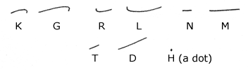
(a) The curves are
formed from an elliptical figure: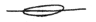
(b) These strokes are
written forward; the T and D upward from the line
of writing.
(c) The G is
always the G in words such as gehen, never the
G in foreign words such as Genie (The character
for this G will be given later). G at the
end of words and syllables is sometimes pronounced CH,
as in bröckelig, but the stroke as given at the head
of this paragraph is always used.
(d) Similarly, D
at the end of words is sometimes pronounced T, but D
is written notwithstanding. Tod is an example.
(e) The H dot is placed
just above the vowel which immediately follows.
4.
The vowels are represented by the circle (in two sizes, large and
small) and by hooks. They are written into the shorthand form
at the point where they occur in the spoken word.
5. A Vowel Markings
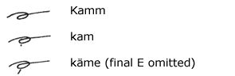
(a) The large circle
represents the vowel sound (the A) in Kamm; with
a light dot underneath, it represents the vowel A in kam,
the AH in Mahl, or the AA in Aal; with a short
dash, it represents the Ä in käme, the
EE in leer, the EH in kehren,
or the E in dem.
(b) The dots and dashes
are seldom used; they become necessary occasionally in isolated
or unfamiliar words.
6. E Vowel Markings
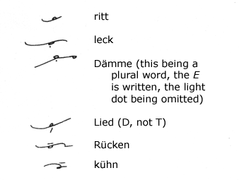
The small circle has
four values: Standing alone it represents the I in
nimm; with a light dot, the E in denn
or the Ä in fällig; with a short dash,
the IE in Kiel; with a short light horizontal
line struck over it, it represents the Ü in Rügen
and Müller.
The following are the
rules to be observed for the writing of the circles:
(a)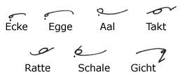
Inside curves standing
alone or joined to straight strokes without forming an angle.
(b) 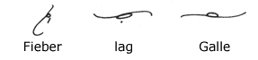
Between two reverse
curves the circle is turned on the back of the first curve.
(c)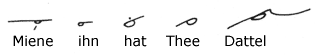
When joined to straight
strokes (and when coming between two straight strokes in the same
line) the circle is written in the direction of movement of the
hands of the clock.
(d)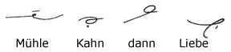
When two characters
join with an angle, the circle is written outside the angle.
8. Word-Signs
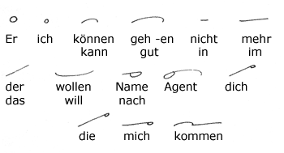
A large proportion of
all written and spoken language is made up of a comparatively few
words. The above forms, which are termed "word-signs,"
should be committed thoroughly to memory.
9. Phrasing
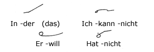
Simple words when they
form natural grammatical phrases should be joined, but awkward joinings
must be carefully avoided. The above are a few examples.
10. Punctuation
should be given proper attention. The period is expressed
by , the
end of a paragraph by ,
the dash by ,
the hyphen by
(struck upwards), and the mark of interrogation by .
Parentheses are expressed by the ordinary
marks with short dashes struck through them: 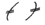
Other punctuation marks are written
in the usual way.
- Next Page -
|